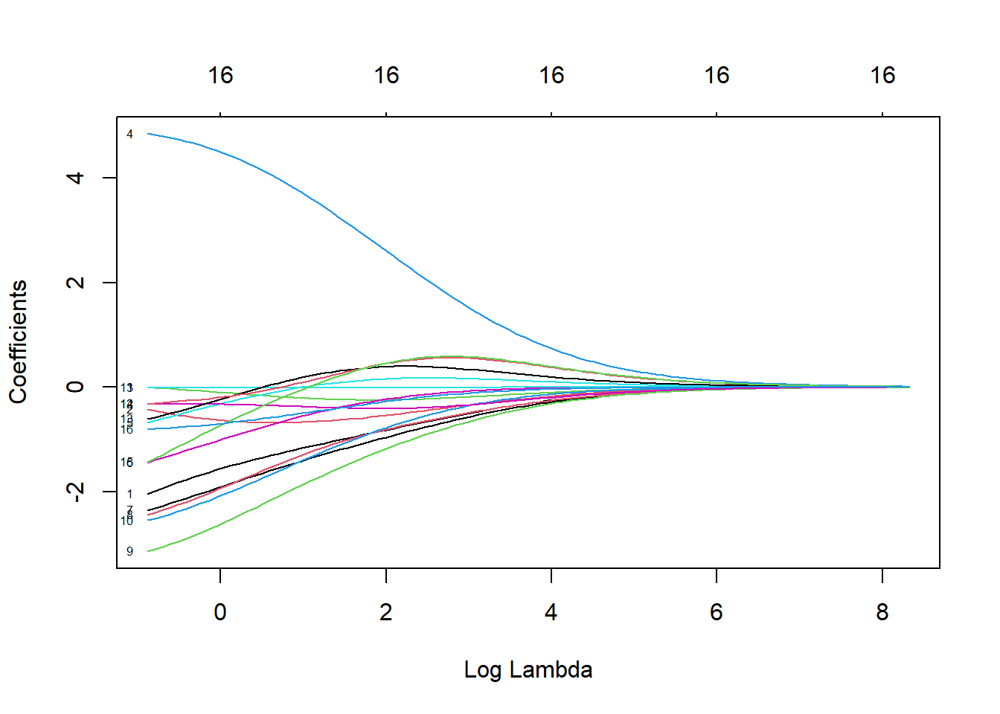

7.2 WITHOUT CV
7.2.1 OLS
## (Intercept) Age Weight Height Neck Chest
## 10.53771759 0.07344948 0.01129956 -0.05372288 -0.80411627 -0.11789624
## Abdomen Hip Thigh Knee Ankle Biceps
## 0.98528673 -0.43320085 0.37243770 -0.25791914 0.24878673 0.07757529
## Forearm Wrist
## 0.58521403 -1.97978709
## [1] 4.7122477.2.2 RIDGE


## [1] 0.4977024## [1] 4.8567317.2.3 LASSO

## [1] 0.04977024## [1] 4.618946## RMSE
## 1 5.023873
## RMSE
## 1 4.885821
## RMSE
## 1 4.901642